Part 2: Your 15-minute talk
Chapter 14 of 62
Presentation script (slide by slide)
When and how long: Out loud, timed, once a day until the meeting. About 11 minutes.
Say the Say lines while the slide is up. Then say the Next → line and press the right arrow. Speak slowly, at 115 to 120 words a minute, and take one breath at each slide change.
Full version (default): slides 1 to 13, about 10:45 on the slides. Your work is about 5:50 and the plan about 4:55. Do not add words to fill 15 minutes.
10 minutes: skip slide 3. After the slide 2 Next line, press the right arrow twice to reach slide 4. On slide 7, leave out "The user approves only what they can see." About 9:50.
5 minutes: on slide 1, leave out the first sentence. Instead of its Next line, say "I will go straight to my research plan." Press the right arrow seven times to reach slide 8, then present slides 8 to 13. About 5:15.
Read it aloud until it feels like your own words. On the day, present from the slides, not from this page.
Before you start
Hello. Thank you for your time today. My name is Sudhanshu Pandit, and I am applying to work with Prof. Zheng in the Dependable Systems Laboratory.
May I keep a printed copy of my research plan on my desk? (Wait for the answer.)
May I share my screen? Can you see my slides? (Wait for "yes", then start.)
Slide 1 · Does a shared AGENTS.md make coding-agent runs fail together? · about 0:30
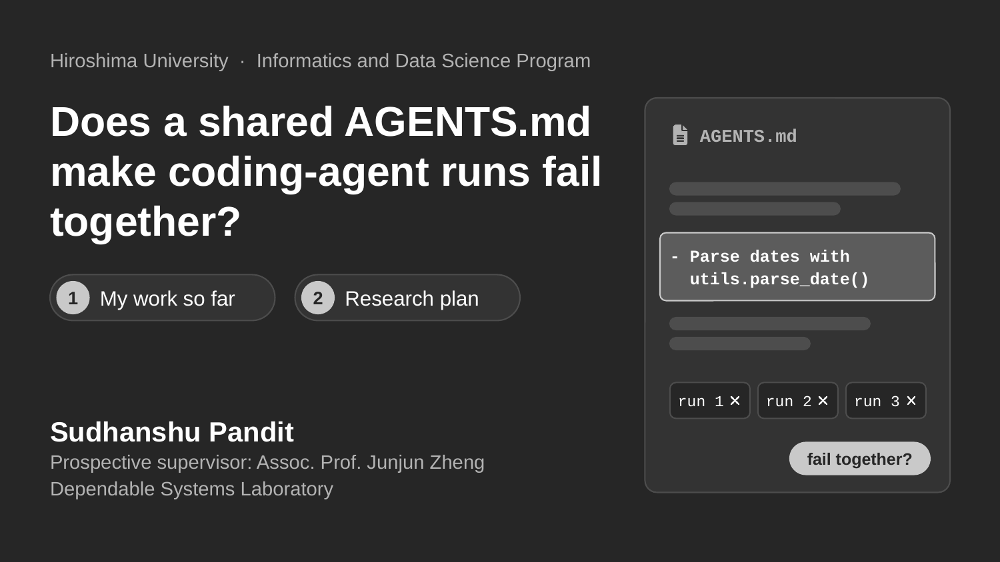
Say: My talk has two parts: my work so far, and then my research plan. Coding agents such as Claude Code and Codex read a rules file in the repository, called AGENTS.md or CLAUDE.md. Every run reads the same file. So do the runs also fail on the same inputs?
Next → First, a little about me.
Slide 2 · AI engineer now, student from April 2027 · about 0:55
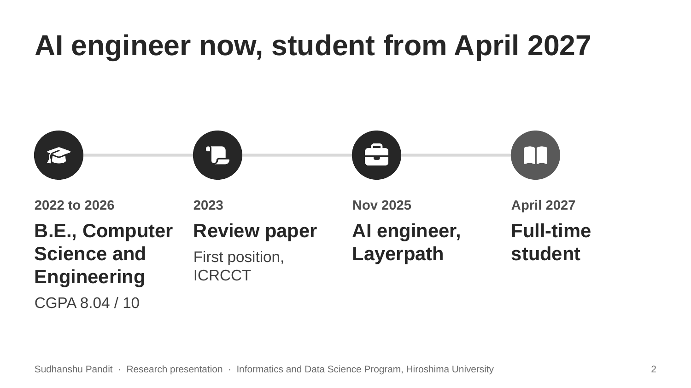
Say: I finished my B.E. in Computer Science and Engineering in 2026, at Sri Sairam College of Engineering, under VTU. My CGPA was 8.04 out of 10. In 2023, I was the second of four authors of a review paper. It won first position at a conference held by my department. Since November 2025, I have been an AI engineer on the founding team at Layerpath. It is a small startup that makes interactive product demos, and I build its AI features. If I am admitted, I will leave Layerpath and study full time from April.
Next → Now, some things I built, and what each one taught me.
Slide 3 · Magic Editor: the user approves every edit · about 0:50
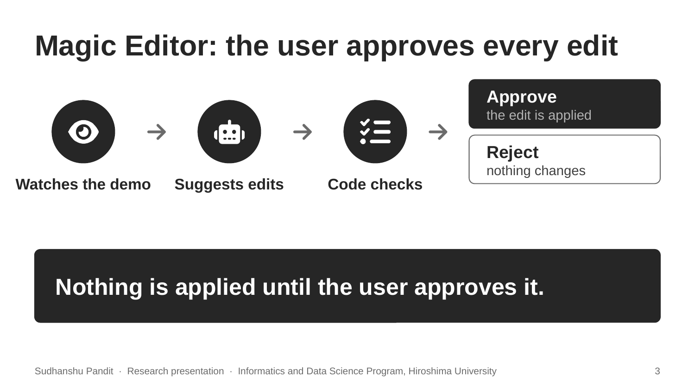
Say: Magic Editor is an AI assistant at Layerpath that edits interactive product demos. It suggests new text and voiceover for any step. The user asks for an edit. The model proposes it in a fixed format, and the code checks the format. Then the user approves it, or rejects it and nothing changes. The model never changes a demo by itself. The same idea is in my plan: an agent run counts only if it passes the task's tests.
Next → Magic Editor suggests the text, and my next project, BrandMemory, tells it how a company writes.
Slide 4 · BrandMemory: rules the model never saw · about 0:45
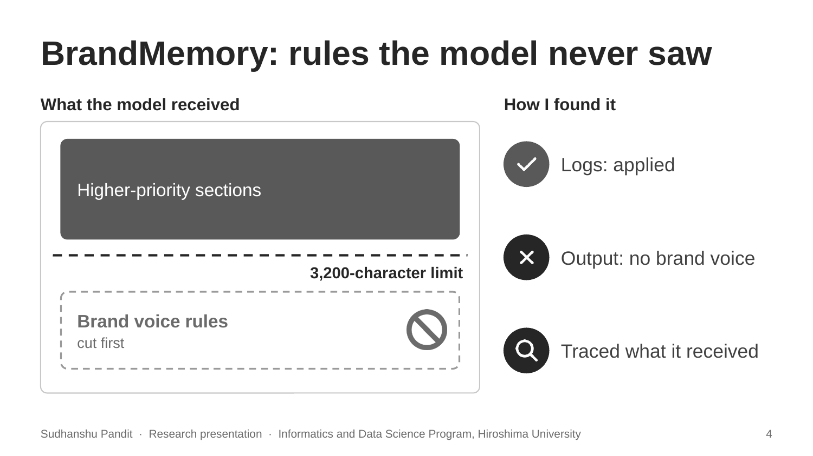
Say: BrandMemory learns a company's writing voice from its website, and gives those rules to the model. The logs said the brand guidance was applied. But the output had no trace of the brand voice. So I traced what the model actually received. There was a limit of 3,200 characters. The brand voice had the lowest priority, so it was cut first. The model never saw the rules. Since then, I always check whether a model actually follows an instruction.
Next → Next, my own project.
Slide 5 · Yuki 2.0: a check before any lasting step · about 1:05
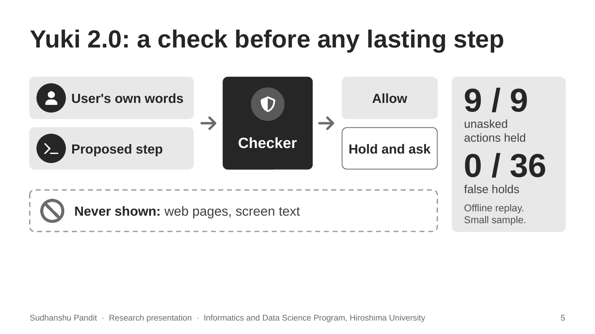
Say: Yuki 2.0 is my desktop agent for Windows, written in plain Python and public on GitHub. Before any lasting step, such as sending a message or deleting something, a separate small model checks it. It allows the step, or holds it and asks the user. The checker sees only the user's own words and the proposed step. It never sees web pages or screen text, so a web page cannot talk it into anything. In an offline replay, it held all 9 actions the user had not asked for. It wrongly held none of the 36 actions they had asked for. It is a small sample, but it taught me to test a safety check with data.
Next → Besides building agents, I also use coding agents every day.
Slide 6 · Every day: one rules file, read by every run · about 1:05
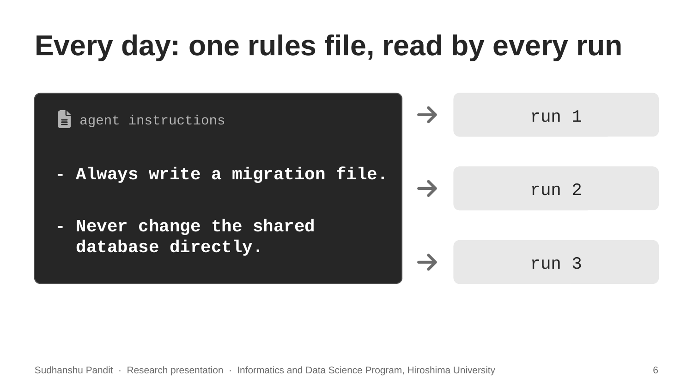
Say: Every day, I give Claude Code or Codex a task. Then I review and test the change it makes. The agent reads a rules file, CLAUDE.md or AGENTS.md, and I maintain these files. Here is one rule I added: always write a migration file, and never change the shared database directly. I added it after an agent changed our shared database, and that blocked our next deploy. Does the agent follow a rule every time? I have not measured it. The Claude Code documentation itself says there is no guarantee of strict compliance. And every run reads the same file. So if a rule pushes the agent the wrong way, every run goes the same wrong way.
Next → So what do these projects have in common?
Slide 7 · Tests only cover what someone thought of · about 0:50
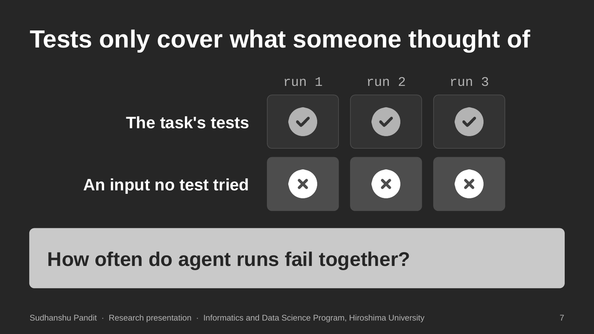
Say: Each check covers only the cases someone thought of. The user approves only what they can see. My replay covers only the calls I recorded. And a task's tests cover only the inputs the developer wrote. Three agent runs can all pass the tests. But they can still fail together on an input no test tried, because they read the same rules file. Then running the agent three times and voting does not help.
Next → I want to measure how often this happens. That needs probability models. This brings me to my research plan.
Slide 8 · Voting needs versions that fail differently · about 0:45
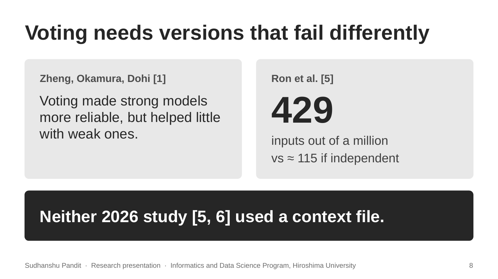
Say: In N-version programming, a vote helps only if the versions rarely fail on the same inputs. Prof. Zheng, Prof. Okamura and Prof. Dohi found that voting made strong models more reliable, but helped little with weak ones. Two studies from 2026 found that versions written by language models fail together more often than independence predicts. In one, two or more of 48 agent-written programs failed together on 429 of a million inputs. Independence predicts about 115.
Next → But neither of the two 2026 studies used a context file. So I ask two questions.
Slide 9 · Two questions: shared failures and one rule · about 0:45
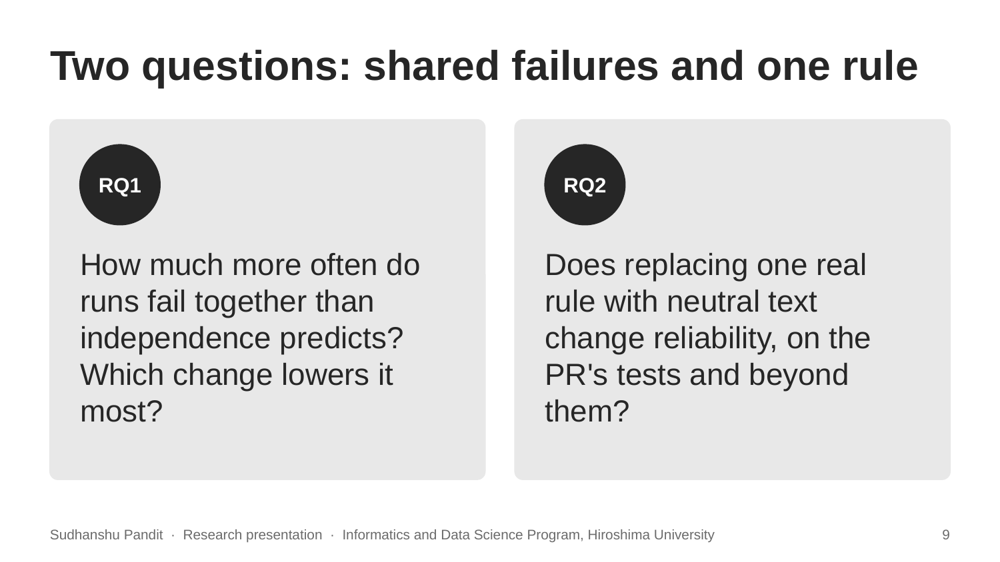
Say: RQ1: when several agent runs solve one real task with the same context file, how much more often do they fail on the same inputs than independence predicts? And which change between runs lowers that most: the file, the agent, the model or the temperature? RQ2: if I replace one real rule with neutral text, does the reliability of the code change, on the pull request's tests and on generated inputs beyond them?
Next → To answer them, I run agents many times on real tasks.
Slide 10 · Method: repeated runs on real tasks · about 0:50
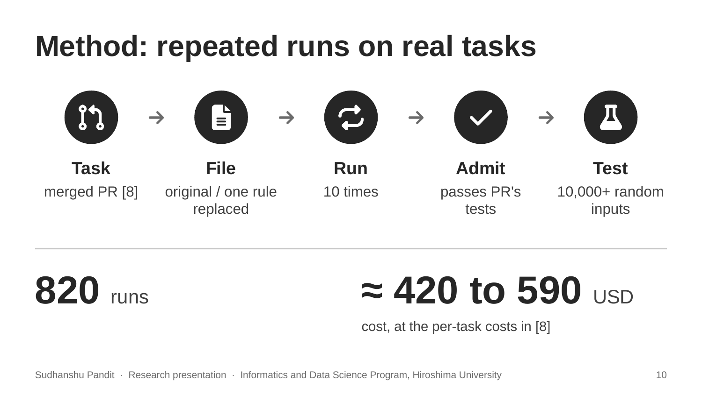
Say: I start from 138 public tasks: merged pull requests whose tests fail before the change and pass after it. The agent gets the original context file, or the file with one rule replaced. Each setting runs ten times, with Claude Code, Codex and my own harness. A run counts only if it passes the pull request's tests. Then I compare it with the merged code on at least 10,000 random inputs. That is 820 runs, for about 420 to 590 US dollars.
Next → Then I need one number for how often these runs fail together.
Slide 11 · One number for "fail together" · about 1:05
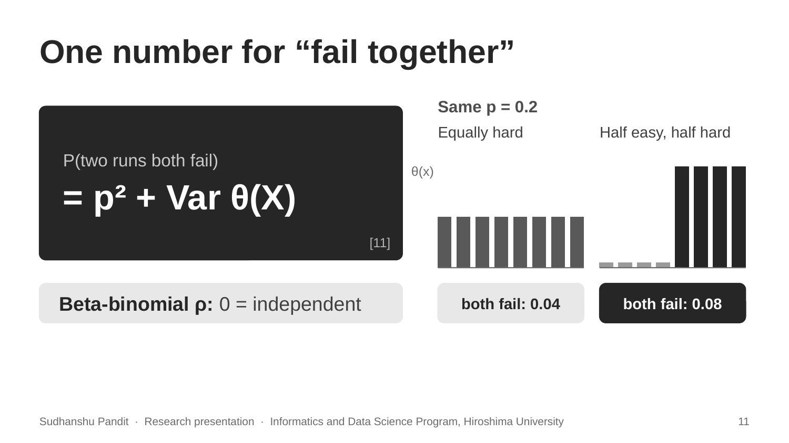
Say: Let theta of x be the chance that a run fails on input x, and p its mean. Two runs both fail with probability p squared, plus the variance of theta. As Eckhardt and Lee showed, the runs are independent only if every input is equally hard. In the picture, p is 0.2 in both cases. If every input is equally hard, two runs both fail 4 percent of the time. If half are easy and half are hard, it is 8 percent. I model theta with a Beta distribution. Then the number of failing runs on one input is beta-binomial. One number, rho, measures the dependence. Rho zero means independent.
Next → Here is my plan for the two years, and the results I expect.
Slide 12 · Two years, two results, all data public · about 0:50
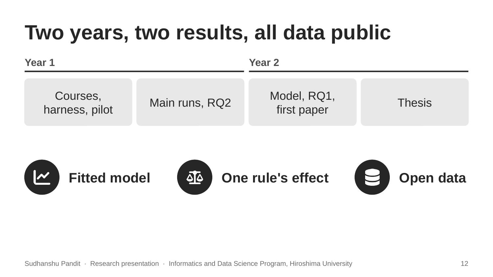
Say: In Year 1, I take probability, statistics and reliability courses, build the harness, and run a pilot. Then I do the main runs and study RQ2. In Year 2, I fit the shared-failure model for RQ1, write a first paper, and then the thesis. I expect two results. First, a fitted model, so a team can choose how many runs to vote over at a given cost. Second, an answer on whether removing one real rule changes reliability beyond the tests. All tasks, code and data will be public.
Next → To close, here is how my plan builds on this lab's work.
Slide 13 · What I want to learn in this lab · about 0:40
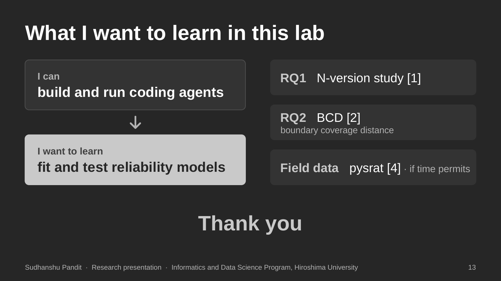
Say: RQ1 takes this lab's N-version study to real repository tasks. RQ2 uses the lab's boundary value method, BCD, as a stress test. If time permits, field data on later fixes to agent code would use pysrat. I can build and run the agents. But I cannot yet fit and test reliability models on their failures. That is what I want to learn in this lab.
Next → Thank you very much for listening. I am happy to take your questions.
Slide 14 · References on these slides · backup
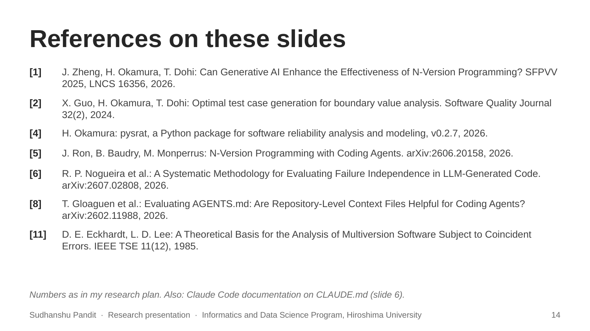
Backup only. Do not present it. Open it only if someone asks where a number comes from.